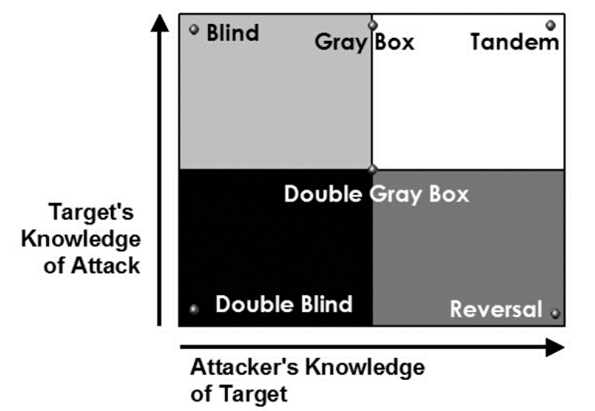

下列的弱點應對修補方式, 何者較「不」適當?
A
緩衝區溢位要用記憶體防護 (DEP - Data Execution Prevention)
B
遠端執行安全漏洞 (RCE - Remote Code Execution) 可以透過防火牆阻擋
C
Command Injection 用過濾方式即可防護
D
Resource Injection 可以用白名單方式過濾
(A) DEP 是一種作業系統層級的記憶體保護技術，它將記憶體區域標記為不可執行，有助於防止攻擊者在堆疊或堆積中注入並執行惡意程式碼，是對抗緩衝區溢位攻擊的一種防護機制。
(B) RCE 漏洞通常存在於應用程式（如 Web 應用、伺服器軟體）的程式碼邏輯中。防火牆主要工作在網路層和傳輸層，過濾網路流量。雖然防火牆（特別是WAF）可能可以識別和阻擋部分已知的 RCE 攻擊流量特徵，但它無法根本修補應用程式本身的漏洞。聲稱可以「透過防火牆阻擋」來修補 RCE 漏洞是不準確且不適當的，根本解決方法是修正應用程式碼或更新軟體版本。
(C) Command Injection 的防護關鍵在於處理使用者輸入。過濾掉輸入中的特殊命令字元（如 `|`, `&`, `;`）或使用安全的 API 是主要的防護手段。
(D) Resource Injection（如檔案路徑包含、XML 外部實體注入等）通常可以透過驗證使用者輸入，確保其只包含預期的、安全的資源標識符（即白名單過濾）來防護。
因此，最不適當的說法是 (B)。
試問運用網頁文字輸入欄位中, 以輸入「' or 1=1」訊息內容的方式, 讓該網頁顯示出所有的資料內容, 這種攻擊型態屬於下列那種攻擊手法?
A
XSS (Cross-Site Scripting)
C
CSRF (Cross-Site Request Forgery)
D
DDoS (Distributed Denial-of-Service)
輸入「' or 1=1」是一種經典的 SQL Injection (SQL 注入) 攻擊手法。
假設後端原始的 SQL 查詢語句是類似 `SELECT * FROM users WHERE username = '[使用者輸入]' AND password = '[密碼輸入]'`。
如果攻擊者在使用者名稱欄位輸入 `' or 1=1 --`，那麼查詢語句會變成 `SELECT * FROM users WHERE username = '' or 1=1 --' AND password = '...'`。
其中 `1=1` 永遠為真，`--` (或 `#`) 在某些 SQL 方言中表示註解，會使後面的密碼條件失效。結果整個 `WHERE` 條件變為真，導致查詢返回 `users` 表中的所有資料，繞過了身份驗證。
(A) XSS 是注入惡意JavaScript 到網頁中。
(C) CSRF 是偽造使用者請求。
(D) DDoS 是阻斷服務攻擊。
因此，這種手法屬於 (B) SQL Injection。
駭客為了追求最大利益, 將亂槍打鳥的隨機攻擊轉換成目標式攻擊, 進階持續性威脅 (Advanced Persistent Threats, APT) 即是最難防禦的目標式攻擊。關於 APT 攻擊的敘述, 下列何者錯誤?
B
APT 攻擊的模式通常都是透過老舊的網路設備進行攻擊
D
遭受攻擊後, 被害者多數只能盡快修補漏洞並設定災害停損點, 無法有效根除攻擊
關於 APT 攻擊的特性：
(A) APT 攻擊者通常會極力隱藏自己的行蹤，使用客製化或低特徵的惡意程式，並在目標網路中長期潛伏以達成其特定目的（如竊取機敏資料、進行間諜活動）。
(B) APT 攻擊者會利用各種可能的入侵管道，可能利用老舊未修補的設備漏洞，但也常利用零時差漏洞 (Zero-day)、社交工程、供應鏈攻擊等多種複雜的手段。聲稱「通常都是透過老舊網路設備」過於簡化且不準確。
(C) APT 的潛伏期長短不一，取決於攻擊者的目標和策略，可能短至數天，也可能長達數月甚至數年。
(D) 由於 APT 攻擊的隱匿性和持續性，即使發現並修補了某個漏洞，攻擊者可能已經在內部建立了多個立足點或後門。因此，受害者往往難以完全根除所有潛在威脅，需要持續監控和應變，設定停損點成為必要之惡。
因此，錯誤的敘述是 (B)。
下列哪些是目前 2021 版 OWASP Top 10 中所包含的前 10 種常見風險類別?
A
權限控制失效 (Broken Access Control)
B
跨站請求偽造 (Cross-Site Request Forgery)
D
加密機制失效 (Cryptographic Failures)
OWASP Top 10 2021 版列出的十大 Web 應用程式安全風險類別為：
- A01:2021 - Broken Access Control (權限控制失效)
- A02:2021 - Cryptographic Failures (加密機制失效) (先前稱為敏感資料外洩)
- A03:2021 - Injection (注入式攻擊)
- A04:2021 - Insecure Design (不安全設計)
- A05:2021 - Security Misconfiguration (安全設定缺陷)
- A06:2021 - Vulnerable and Outdated Components (危險或過舊的元件)
- A07:2021 - Identification and Authentication Failures (認證及驗證機制失效) (先前稱為無效身分認證)
- A08:2021 - Software and Data Integrity Failures (軟體及資料完整性失效)
- A09:2021 - Security Logging and Monitoring Failures (安全記錄及監控失效)
- A10:2021 - Server-Side Request Forgery (SSRF, 伺服器端請求偽造)
對照選項：
(A)
Broken Access Control 是 A01。
(B)
Cross-Site Request Forgery (
CSRF) 在 2017 版是 A08，但在
2021 版已被移除出 Top 10 (雖然仍是風險，但相對排名下降)。
(C)
Injection 是 A03。
(D)
Cryptographic Failures 是 A02。
因此，屬於 2021 版 Top 10 的是 (A)、(C)、(D)。
*註：本題PDF答案標示為A, C, D。*
【題組1】背景描述：組織內部正在導入相關以技術來審查脆弱性補強的工具, 包含作業系統弱點掃描、滲透測試、社交工程等, 以下描述是針對這些工具實施之後, 相關後續處理的議題。
系統弱點掃描後的修補處理方式, 下列何者是「不」可以接受補償措施的替代方案?
C
因系統老舊風險無法修補, 但已將對外連線皆予以關閉, 無其他風險漏洞
弱點掃描發現風險後，理想情況是進行修補。若無法立即修補，可能接受補償措施 (Compensating Controls) 或風險接受。
(A) 掃描工具可能產生誤判 (False Positive)。經過人工審查確認為誤判後，由主管核可關閉該風險項，這是合理的處理方式。
(B) 如果更新系統需要長期計畫，代表短期內無法修補。但對於已識別的風險，不能因為修補耗時就直接「接受」，尤其是如果風險等級較高。<應評估是否有臨時的補償措施可以降低風險，或至少要有明確的風險接受程序（通常僅限於低風險或處理成本極高的情況），而非輕易接受。
(C) 如果系統老舊確實無法修補，但已採取了有效的補償措施（如隔離網路、關閉對外連線、加強監控等），且確認殘餘風險在可接受範圍內，這可以視為一種合理的風險處理方式（風險降低+風險接受）。
(D) 安排更新並進行測試是標準的修補流程，是降低風險的根本方法。
比較之下，選項 (B) 中僅因更新耗時就「先予以接受」風險，沒有提及評估風險等級或尋找補償措施，是最不恰當的處理方式。
【題組1 背景描述如前】下列何者「不」是利用工具技術偵測應用系統弱點的機制?
偵測應用系統弱點的技術機制：
(A) 弱點掃描 (DAST)：使用自動化工具掃描運行中的應用程式，尋找已知的漏洞。
(B) 滲透測試：雖然涉及大量人工，但也常輔以各種工具（掃描器、代理工具、漏洞利用工具）來發現和利用弱點。
(D) 源碼檢測 (SAST)：使用自動化工具分析應用程式的原始碼，尋找潛在的安全缺陷。
(C) 社交工程是利用人性的弱點（如信任、恐懼、好奇心）來誘騙使用者執行不安全的操作或洩漏敏感資訊。它主要針對人，而非直接利用技術工具偵測應用系統本身的技術性弱點。
因此，不是利用工具技術偵測應用系統弱點機制的是 (C)。
【題組1 背景描述如前】下列何種資產不會產生資訊系統安全弱點暴露的風險, 被外界所利用攻擊?
分析各類資產與弱點暴露風險：
(A) 電腦硬體可能存在韌體漏洞（如 BIOS/UEFI 漏洞）、硬體設計缺陷（如 Meltdown/Spectre）或物理安全弱點，可能被利用。
(B) 電腦軟體（作業系統、應用程式）是最常見的弱點來源，存在各種編碼錯誤、配置缺陷等，可被利用進行攻擊。
(C) 電腦資料本身雖然是被保護的對象，但其儲存方式、存取控制、加密強度等可能存在弱點，導致資料洩漏、竄改或遺失。
(D) 人員是組織的重要資產，但人員本身不是「資訊系統安全弱點」。人員可能缺乏安全意識、可能操作失誤、可能成為社交工程的目標，從而導致弱點被利用或產生安全事件，但人員本身不是技術性弱點。題目問的是哪種資產「不會產生」弱點暴露風險。
因此，相較於硬體、軟體、資料這些技術性資產可能直接存在可被利用的技術弱點，人員資產主要是引入人為風險，而非系統性弱點。
【題組1 背景描述如前】下列哪些是資訊安全管理系統實施中須考量的系統弱點?
C
Microsoft 定期發布的 Windows Update 檔案
題目問的是實施 ISMS 時須考量的「系統弱點」。弱點是指可能被威脅利用來造成損害的缺陷。
(A) 源碼掃描發現的高風險結果直接指出了程式碼層級的已知或潛在弱點。
(B) 滲透測試發現的高風險結果代表系統存在可被實際利用的弱點。
(C) Windows Update 檔案本身不是弱點，而是修補弱點的方法。需要考量的弱點是「未安裝」這些更新所導致的已知漏洞。
(D) 防火牆韌體更新資訊同樣是為了修補弱點。需要考量的弱點是「未更新」防火牆韌體而存在的漏洞。
嚴格來說，(C)和(D)描述的是「修補程式資訊」，而不是「弱點」本身。但如果理解為「需要關注這些更新資訊所對應到的弱點」，那麼它們也與弱點管理相關。選項 A 和 B 是更直接的弱點識別結果。
*Self-Correction: 重新思考題目意涵。題目問的是ISMS實施中需考量的"系統弱點"相關事項。(A)和(B)是弱點發現結果，直接相關。(C)和(D)是弱點的"補丁資訊"，關注這些資訊是弱點管理(修補)的一部分，因此也需要考量。若系統缺少(C)或(D)所對應的更新，則系統存在弱點。從這個角度看，A, B, C, D都與考量系統弱點有關。*
*註：本題PDF答案標示為A, B, C, D 全選。*
零時差攻擊 (Zero-day Attack) 是指駭客利用開發商尚未釋出修補程式的安全漏洞進行攻擊。下列敘述何者錯誤?
B
面對零時差攻擊, 入侵防禦系統 (Intrusion Prevention System, IPS) 或是網頁應用程式防火牆可進行有限度的防護
D
迅速與確實進行弱點修補才是零時差攻擊的根本解決之道
關於零時差攻擊：
(A) 已停止支援的作業系統（End-of-Life, EOL）不再接收來自開發商的安全更新。如果駭客在這些系統中發現新的漏洞，開發商根本不會為其釋出修補程式。因此，針對這些系統的攻擊可以被視為永久的零時差攻擊，因為永遠不會有官方補丁。聲稱零時差攻擊「不會」出現在停止支援的系統中是錯誤的，反而這些系統是零時差攻擊的重災區。
(B) IPS 或 WAF 可能透過行為分析、異常偵測或通用攻擊特徵（即使不是針對特定 CVE）來攔截部分零時差攻擊流量，提供有限度的防護。
(C) 虛擬修補 (Virtual Patching) 通常指利用 IPS 或 WAF 等工具，在漏洞被利用的路徑上設置規則來阻擋攻擊流量，作為無法立即安裝官方補丁時的臨時性或補償性措施。它可以降低零時差攻擊成功的機率。
(D) 零時差攻擊的根本原因是有未修補的漏洞。一旦開發商釋出補丁，及時且確實地安裝它，就能從根本上消除該特定零時差漏洞的風險。
因此，錯誤的敘述是 (A)。
社交工程是利用人性弱點誘騙受害者透漏機敏性資料或是允許授權等行為, 下列敘述何者錯誤?
B
社交工程演練的目的是要培養員工反擊的能力, 進而破壞駭客的攻擊手法
C
駭客會利用偽造網站網址誘騙使用者上當也是屬於社交工程的攻擊手法之一
D
企業組織會透過教育訓練宣導資安觀念, 並委託廠商設計測試的釣魚郵件進行檢視員工點擊郵件與連結的行為是否違法資安規定
關於社交工程：
(A) 網路釣魚 (Phishing) 是透過偽造的電子郵件、訊息或網站，誘騙使用者點擊惡意連結或提供敏感資訊，是非常普遍的社交工程手法。
(B) 社交工程演練（如模擬釣魚郵件測試）的主要目的是提高員工的警覺性和識別能力，讓他們學會如何辨識和避免落入社交工程陷阱，而不是培養他們「反擊」或「破壞」駭客攻擊的能力。資安防禦通常不鼓勵員工自行反擊。
(C) 利用偽造的網站（例如看起來像銀行登入頁面）來騙取使用者的帳號密碼，是釣魚攻擊的一種常見形式，屬於社交工程。
(D) 企業透過教育訓練和模擬演練來評估和提升員工對社交工程的防禦能力，並檢視其行為是否符合公司資安政策和規定，是常見的安全意識提升計畫。
因此，錯誤的敘述是 (B)。
路由協定(Routing Protocol)是一種指定封包轉送方式的網路協定, 請問關於路由協定之敘述, 下列何者錯誤?
A
路由資訊協定 (Route Information Protocol, RIP) 是最簡單的路由協定, 主要傳遞路由資訊, 透過每隔 5 秒廣播一次路由表來維護相鄰路由器的位置關係
B
路由資訊協定 (Route Information Protocol, RIP) 是一個距離向量路由協定, 最大 hop 數為 15, 超過 15 hop 的網路則認為目標網路不可到達
C
開放式最短路徑優先 (Open Shortest Path First, OSPF) 協定是屬於鏈路狀態路由協定, 係利用所維護的網路狀態資料庫, 透過最短路徑優先演算法 (SPF 演算法) 計算來得到路由表
D
開放式最短路徑優先 (Open Shortest Path First, OSPF) 協定是屬於動態路由協定
關於路由協定：
(A) RIP 確實是較早且簡單的距離向量路由協定。但它預設的更新週期是每 30 秒，而不是每 5 秒。因此，這個敘述錯誤。
(B) RIP 是距離向量協定，使用跳數 (hop count) 作為度量標準，其最大跳數限制為 15，超過 15 跳（即第 16 跳）被視為無限大，代表目標不可達。正確。
(C) OSPF 是典型的鏈路狀態路由協定 (Link-State Routing Protocol)。每個路由器維護整個區域的鏈路狀態資料庫 (LSDB)，並使用 SPF (Dijkstra) 演算法計算到所有目標的最短路徑，生成路由表。正確。
(D) OSPF 能夠自動學習和適應網路拓撲的變化，屬於動態路由協定。正確。
因此，錯誤的敘述是 (A)。
當網路防火牆受到偵測攻擊時, 下列何者最「不」適宜?
應對防火牆遭受偵測攻擊（如端口掃描）的措施：
(A) 不應將防火牆的管理介面（管理 Port）暴露於外部網路。如果需要遠端管理，應透過 VPN 等安全通道進行，並限制來源 IP。關閉不必要的對外管理 Port 是適當的。
(B) 提供最高權限（如 root 或 administrator）給外部維護廠商是非常危險的做法，違反了最小權限原則。應僅授予廠商完成其工作所需的最低必要權限，並在使用時進行監控。此做法最不適宜。
(C) 防火牆規則應定期檢視，移除不再需要或過時的規則，確保規則的有效性和必要性。
(D) 防火牆產生的告警（如偵測到掃描、攻擊嘗試）應由專人（如 SOC 分析師）及時確認是否為真實威脅，並採取相應的處置。
因此，最不適宜的做法是 (B)。
關於 MITRE ATT&CK 中的網路服務阻斷(Network Denial of Service) 技術(Technique) 對策, 下列何項錯誤?
A
可分析應用程式日誌 (Application Log) 內容來偵測此技術
B
可觀察網路流量 (Network Traffic) 狀態來偵測此技術
C
可觀察感應器健康 (Sensor Health) 狀態來偵測此技術
D
可透過網路流量過濾 (Filter Network Traffic) 來緩解此技術
網路服務阻斷 (Network Denial of Service, T1498) 攻擊主要發生在網路層或傳輸層，目的是耗盡網路頻寬或伺服器連線資源。
(A) 應用程式日誌主要記錄應用程式層級的活動和錯誤。雖然 DoS 攻擊最終可能導致應用程式無回應或產生錯誤日誌，但直接偵測攻擊本身（如大量異常流量）通常不是透過分析應用程式日誌來完成的。應用程式日誌對於偵測此類攻擊的效果有限。
(B) 監控網路流量的速率、封包類型、來源分佈等狀態，是偵測 DoS/DDoS 攻擊的主要方法。例如，流量突然異常飆高、大量來自特定來源或特定類型的封包湧入等。
(C) 網路感應器（如 IPS、流量分析設備）在遭受大量惡意流量攻擊時，其自身負載可能過高，監控其健康狀態（CPU、記憶體使用率、丟包率）可能間接反映出正在遭受攻擊。
(D) 網路流量過濾是緩解 DoS 攻擊的主要手段，例如使用防火牆、IPS 或專業的 Anti-DDoS 設備來識別並丟棄惡意流量。
因此，錯誤（或效果最差）的敘述是 (A)。
關於 MITRE ATT&CK 中的資料加密衝擊 (Data Encrypted for Impact) 技術對策, 下列何項錯誤?
A
可透過資料備份 (Data Backup) 來緩解此技術
B
可觀察感應器健康狀態 (Sensor Health) 來偵測此技術
C
可透過端點行為預防 (Behavior Prevention on Endpoint) 來緩解此技術
D
可觀察檔案建立 (File Creation) 與修改 (File Modification) 狀態偵測此技術
資料加密衝擊 (Data Encrypted for Impact, T1486) 主要指勒索軟體的行為，即加密受害者的檔案以勒索贖金。
(A) 資料備份（尤其是離線或不可變備份）是最重要的緩解措施，可在資料被加密後進行恢復。
(B) 感應器健康狀態（如網路感應器）與檔案被加密這種端點上的行為通常沒有直接關聯，觀察此狀態無法有效偵測勒索軟體加密行為。
(C) 端點行為預防（如 EDR 或次世代防毒中的行為偵測引擎）可以識別勒索軟體典型的行為模式（如大量讀寫檔案、嘗試刪除備份、修改系統設定等），並在加密造成大規模損害前阻止其執行，是一種有效的緩解/預防手段。
(D) 勒索軟體在加密檔案時會進行大量的檔案讀取、修改和建立（例如，創建加密後的新檔案、留下勒索信檔案）。監控異常、高速的檔案操作活動是偵測勒索軟體行為的關鍵指標之一。
因此，錯誤的敘述是 (B)。
身分驗證機制是利用帳戶密碼進行作為識別使用者的機制, 是多數資訊系統驗證使用者身分的基礎。關於身分驗證機制的敘述, 下列哪些正確?
A
設定「最小密碼長度」的原則主要是要產生更多的密碼組合, 提高被破解的難度。美國國家標準暨技術研究院(National Institute of Standards and Technology, NIST)建議最小長度為 8 個字元
B
設定「密碼歷程記錄」的原則為了方便使用者自己找到以前使用過的密碼
C
設定「密碼最短使用效期」的原則是指該密碼必須使用一段時間後才能再次進行變更, 通常是配合密碼歷程機制啟用
D
「圖形驗證碼」是設計一組對人類能夠輕易回答而對電腦是困難的題目, 以作為區分執行動作的是電腦還是人類的行為
關於身份驗證機制中的密碼原則等：
(A) 密碼長度越長，可能的組合數就越多（呈指數增長），暴力破解或猜測的難度就越高。NIST SP 800-63B 確實建議使用者自選密碼的最小長度為 8 個字元。正確。
(B) 設定「密碼歷程記錄」是為了防止使用者重複使用最近用過的舊密碼，增加密碼的變化性，而不是為了方便找回舊密碼。錯誤。
(C) 設定「密碼最短使用效期」（例如 1 天）是為了防止使用者在被強制要求更改密碼時，立即將密碼改回原來的舊密碼（或短期內快速循環改回）。通常與密碼歷程記錄配合使用，確保密碼在一段時間內真正被更換。正確。
(D) 「圖形驗證碼」 (CAPTCHA - Completely Automated Public Turing test to tell Computers and Humans Apart) 的目的就是設計一個人類容易通過但自動化程式難以通過的測試，用來區分操作者是真人還是機器人（例如防止機器人濫用註冊、發表評論等）。正確。
因此，正確的敘述是 (A)、(C)、(D)。
*註：本題PDF標示答案為A, C, D。*
NIST 網路安全框架 (Cybersecurity Framework, CSF) 有關「框架核心 (Framework Core)」係由識別 (Identify)、保護 (Protect)、偵測 (Detect)、回應 (Respond) 與復原 (Recover) 等功能所組成。請問關於「保護 (Protect)」功能的敘述, 下列哪些正確?
A
包含身份管理與存取控制 (Identity Management and Access Control) 與意識和訓練 (Awareness and Training)
B
包含資料安全 (Data Security) 與資訊保護流程與程序 (Information Protection Processes and Procedures)
C
包含維護 (Maintenance) 與保護技術 (Protective Technology)
D
包含資產管理 (Asset Management) 與風險評估 (Risk Assessment)
根據
NIST CSF v1.1，「
保護 (
Protect)」功能旨在制定和實施適當的
安全防護措施，確保關鍵基礎設施服務的交付。
其下的
類別 (
Categories) 包括：
- PR.AC: 身份管理與存取控制 (Identity Management and Access Control)
- PR.AT: 意識和訓練 (Awareness and Training)
- PR.DS: 資料安全 (Data Security)
- PR.IP: 資訊保護流程與程序 (Information Protection Processes and Procedures)
- PR.MA: 維護 (Maintenance)
- PR.PT: 保護技術 (Protective Technology)
對照選項：
(A) 包含 PR.AC 和 PR.AT。正確。
(B) 包含 PR.DS 和 PR.IP。正確。
(C) 包含 PR.MA 和 PR.PT。正確。
(D)
資產管理 (
ID.AM) 和
風險評估 (
ID.RA) 屬於「
識別 (
Identify)」功能。
因此，正確的敘述是 (A)、(B)、(C)。
*註：本題PDF標示答案為A, B, C。*
【題組2】背景描述：駭客勒索集團入侵年收五百億上市公司, 對其重要資料庫系統與研發系統破壞勒索加密, 經過相關緊急應變後, 費時近半個月才恢復公司正常運營, 事後總經理召開檢討會議進行檢討。
發現公司並未依照法規(資安法與上市上櫃資通安全管控指引)定期進行相關作為, 請問下列敘述何者正確?
A
公司可以不需配置資安長, 只需配置設適當資安人力
B
公司遭受重大資安事件, 不需揭露相關資安事件重大訊息
C
強制公司加入台灣電腦網路危機處理暨協調中心 (TWCERT/CC)
根據台灣現行法規（特別是針對上市公司）：
(A) 對於達到一定規模（如資本額百億以上，如此題情境的公司）的上市公司，法規強制要求設置資安長及專責單位/人員。錯誤。
(B) 公司若發生重大資安事件（可能影響財務、業務或股東權益），依據證交法及相關規定，必須發布重大訊息說明。錯誤。
(C) 加入 TWCERT/CC 是鼓勵性質，並非法規強制要求所有上市公司加入。資通安全管理法規範的特定非公務機關則有相關通報義務。錯誤。
(D) 金管會已明確要求將資訊安全納入上市櫃公司的內部控制制度，並將資安治理落實情況納入公司治理評鑑的指標。正確。
因此，正確的敘述是 (D)。
【題組2 背景描述如前】國際勒索集團公司勒索 5000 萬美金, 不然公開該公司機密資料。該勒索集團手法竟是透過公司郵件系統以釣魚郵件方式, 讓內部員工執行惡意程式所造成, 針對郵件安全防護的技術與手段, 下列何項是「非必要」之措施?
A
加強員工郵件安全的教育訓練, 定期進行社交攻防演練
B
採用 CDR (Content Disarm and Reconstruction) 產品進行郵件清洗, 並禁止執行檔下載, 執行檔下載須依規定申請
針對釣魚郵件導致的勒索軟體攻擊，郵件安全防護措施：
(A) 提高員工安全意識，使其能識別釣魚郵件，是非常重要的防線。
(B) CDR 技術可以清除郵件附件中潛藏的惡意內容（如巨集）。禁止或管制執行檔下載也是必要的控制。
(D) 檢查郵件中的URL連結是否指向惡意網站（URL過濾、沙箱分析），是防止使用者點擊惡意連結的重要技術手段。
(C) 對外部郵件「一律進行隔離」過於極端，會嚴重影響正常的業務溝通和郵件收發效率，並非標準或必要的做法。應採取更精準的過濾、掃描和偵測機制，而非一刀切地隔離所有外部郵件。
因此，「非必要」的措施是 (C)。
【題組2 背景描述如前】勒索集團對公司機密資料進行加密, 公司 IT 或是資安團隊應採取的應變措施, 下列何項較「不」適當?
C
查核虛擬備份環境可否快速復原相關系統, 加速恢復運營
勒索軟體事件應變措施：
(A) 不建議聯繫駭客支付贖金。原因包括：支付贖金並不能保證一定能拿回解密金鑰或資料；支付贖金等於資助犯罪，鼓勵更多攻擊；可能觸犯相關法律（如資助恐怖主義）；即使拿到金鑰，解密過程可能耗時且不完整；駭客可能已竊取資料，支付贖金也無法阻止其外洩或濫用。官方機構和資安專家通常建議不要支付贖金。這是最不適當的選項。
(B) 立即檢查備份資料是否可用且完整，是評估能否從備份恢復的關鍵步驟。
(C) 如果有虛擬化備份或異地備援，評估其快速恢復系統的能力，是制定復原計畫的一部分。
(D) 勒索軟體常會嘗試尋找並加密或刪除備份資料。因此，必須確認備份資料本身是否安全、未受感染或破壞。
因此，較不適當的措施是 (A)。
【題組2 背景描述如前】從這次員工電腦因釣魚郵件感染而擴散到不同網段與主機系統, 下列哪些是在資安管理制度或防護技術最適宜的措施?
A
ISO27001:2022 版本在其控制項 8.22 網路隔離, 達成降低駭客入侵橫向擴散的危害
B
在員工電腦規劃端點偵測與回應(Endpoint Detection and Response, EDR)解決方案, 建立有效偵測 IOA (Indicator of Attack) 與 IOC (Indicator of Compromise) 警告偵測機制
C
員工電腦應該建立軟體白名單系統, 嚴格管控執行程式的安裝執行
D
員工所配發個人電腦, 相關資料備份工作由員工自備外接儲存媒體自行備份處置
針對惡意軟體透過釣魚郵件感染並橫向擴散的防護措施：
(A) 網路隔離（或稱網路分段 Segmentation）是限制惡意軟體或攻擊者在內部網路橫向移動能力的關鍵控制措施。ISO 27001:2022 的 A.8.22 控制項確實涉及網路隔離。適宜。
(B) EDR 方案提供進階的端點監控、偵測和回應能力，能更有效地發現可疑行為（IOA）和入侵跡象（IOC），及早阻止惡意活動。適宜。
(C) 採用軟體白名單（應用程式控制 Application Control）策略，只允許已核准的程式執行，可以有效阻止未經授權的惡意程式（包括透過釣魚郵件傳遞的）執行。適宜。
(D) 讓員工自行使用個人外接媒體進行資料備份是非常不安全的做法。這難以管理備份的完整性、一致性和安全性，且外接媒體本身可能成為惡意軟體傳播的途徑。應由組織統一規劃和管理備份機制（如集中備份伺服器）。不適宜。
因此，最適宜的措施是 (A)、(B)、(C)。
*註：本題PDF標示答案為A, B, C。*
ISO/IEC 27001 是資訊安全管理的國際標準, ISO 27001 認證是在確保公司擁有一套安全穩固的資訊管理系統來保護公司內部重要的資訊財產。下列敘述何者錯誤?
A
ISO/IEC 27001 設計是針對 IT 部門進行管理
B
建構資訊安全管理系統 (Information Security Management System, ISMS) 是以具系統性的方法來保護資訊安全。取得 ISMS 的認證也能增加企業或組織的可信度, 並且為公司帶來正面的影響及信任
C
組織應架構一項風險處理計畫以鑑別適當管理措施、資源、職責及優先順序, 以便管理資訊安全風險
D
組織應依規劃之期間施行內部稽核, 以提供資訊安全管理系統相關資訊, 最後階段必須保存文件化資訊作為稽核計畫及稽核結果之證據
關於 ISO/IEC 27001 ISMS：
(A) ISMS 是一個涵蓋整個組織的管理系統，雖然 IT 部門通常扮演重要角色，但 ISMS 的範圍和責任涉及所有相關部門和人員（如管理層、人力資源、法務、業務單位等），而不僅僅是 IT 部門。將其設計侷限於 IT 部門是錯誤的理解。
(B) 描述了 ISMS 的系統性方法及其帶來的效益（提升信任度）。正確。
(C) 制定風險處理計畫是 ISO 27001 中風險處理階段的關鍵要求，用以規劃如何管理已識別的風險。正確。
(D) 內部稽核是 ISMS 持續改進循環中的重要環節，稽核過程和結果必須文件化並作為證據保存。正確。
因此，錯誤的敘述是 (A)。
依照我國「資通安全事件通報及應變辦法」的規定, 公務機關知悉資通安全事件後, 應於多少時間之內, 依主管機關指定之方式及對象, 進行資通安全事件之通報?
根據「資通安全事件通報及應變辦法」第 7 條及附表四「各級資通安全事件通報應變時限」：
不論事件等級（第一級至第四級），公務機關或特定非公務機關（除特定情況外）於知悉資通安全事件後，應於 1 小時內，向主管機關進行事件通報。
因此，通報時限為 (A) 1 小時內。 （注意與 Q20 完成處置時限不同）
關於備份 3-2-1 原則的敘述, 下列何者正確?
備份的 3-2-1 原則是指：
- 3: 至少保留三份資料備份（包括原始資料）。
- 2: 將備份資料儲存在兩種不同類型的儲存媒體上（例如：硬碟 + 磁帶，或 硬碟 + 雲端儲存）。
- 1: 至少將其中一份備份存放在異地 (off-site)。
(A) 「分開存放在兩種不同儲存媒體」符合 3-2-1 中的 "2" 原則。正確。
(B) 放到同一個硬碟的不同分割區（C槽、D槽）
不符合「兩種不同媒體」的要求，也不能算作
異地備份。
(C) 放在不同樓層可能比放在同一處好一點，但
不一定算是「異地」（例如整棟樓發生火災或斷電），且未提及不同媒體。
(D) 如果原始資料或備份資料本身有加密，其對應的
解密金鑰極其重要，
必須與備份資料分開
妥善備份和保管，否則備份了也無法還原。聲稱不需備份金鑰是錯誤的。
因此，正確的敘述是 (A)。
在組織 ISMS 制度中之服務級別協定 (Service-Level Agreement, SLA) 要求妥善率達到 5 個 9 的標準下, 請問在一年中, 下列哪些停機時間在容許的範圍內?
「5 個 9」的妥善率 (Availability) 指的是 99.999% 的時間系統是可用的。
一年的總時間（分鐘）= 365 天 * 24 小時/天 * 60 分鐘/小時 = 525,600 分鐘。
一年的總時間（秒）= 525,600 分鐘 * 60 秒/分鐘 = 31,536,000 秒。
允許的停機時間比例 = 100% - 99.999% = 0.001% = 0.00001。
一年允許的總停機時間（分鐘）= 525,600 * 0.00001 ≈ 5.256 分鐘。
一年允許的總停機時間（秒）= 31,536,000 * 0.00001 ≈ 315.36 秒。
比較選項：
(A) 30 秒 ≈ 0.5 分鐘。 在允許範圍內。
(B) 5 分鐘。 在允許範圍內 (略小於 5.256 分鐘)。
(C) 1 小時 = 60 分鐘。 遠超過允許範圍。
(D) 1 天 = 1440 分鐘。 遠超過允許範圍。
題目問「哪些」停機時間在容許範圍內，A 和 B 都在範圍內。但此題為單選題。選項 (B) 5 分鐘最接近計算出的年度允許停機時間上限 (5.256 分鐘)。
*Self-Correction: The question asks which *downtime duration* is within the allowed range *per year*. Both 30 seconds and 5 minutes are less than the total allowed 5.256 minutes per year. However, typically these questions imply the *total annual downtime*. 5 minutes is the closest value provided that represents this total annual allowance.*
因此，選擇 (B) 5 分鐘 作為代表性的年度容許停機時間。
【題組3】背景描述：王大明剛接下某製造業資安工作, 於本週發生了勒索軟體將公司資料加密, 並收到歹徒所指示的付款要求。
勒索軟體除了加密資料進行勒索之外, 還可能有許多危害, 請問下列何項「不」是勒索軟體可能造成的危害?
勒索軟體除了加密勒索外，常伴隨其他惡意行為：
(A) 現代勒索軟體攻擊常採取「雙重勒索」甚至「多重勒索」策略，即在加密檔案之前，先竊取受害者的敏感資料。如果受害者不付贖金解密檔案，攻擊者會威脅公開或出售竊得的資料。
(B) 勒索軟體入侵成功代表系統已被攻破。攻擊者可能利用這個立足點，進一步滲透到與該公司有往來的供應鏈夥伴系統中，造成供應鏈攻擊。
(C) 受勒索軟體感染的主機可能已被植入後門或成為殭屍網路的一部分，攻擊者可以利用這些受控主機作為跳板去發動對其他目標的攻擊（如DDoS、垃圾郵件）。
(D) 勒索軟體的目的是破壞和勒索，它不會幫受害者完成備份和更新，反而常常會試圖刪除備份和阻止更新。
因此，「不」是勒索軟體可能造成的危害的是 (D)。
【題組3 背景描述如前】本事件可能遭成的後續影響, 針對資料被加密, 請問主要是破壞了下列哪一項的資安原則?
資訊安全的 CIA 三元組原則：
(B) 機密性：確保資訊不被未授權者存取。勒索軟體加密本身不一定直接導致機密性破壞（除非資料同時被竊取）。
(C) 完整性：確保資訊未被未授權竄改。加密確實改變了資料的狀態，使其無法讀取，可視為對完整性的一種破壞。
(A) 可用性：確保已授權使用者在需要時能存取和使用資訊。勒索軟體將資料加密後，合法使用者無法再存取和使用這些資料，直接且嚴重地破壞了資料的可用性。這是勒索軟體最主要的衝擊。
(D) 可歸責性：確保操作行為可以追溯到特定個體。
雖然加密也影響了完整性，但勒索軟體最主要、最直接的目的是讓資料無法使用，因此主要是破壞了可用性原則。
【題組3 背景描述如前】經過調查後, 最「不」可能取得網域伺服器的最高權限為下列何項?
取得網域伺服器（通常指 AD 網域控制器 DC）的最高權限（如 Domain Admin）是攻擊者的常見目標。分析可能途徑：
(A) 防火牆主要負責網路流量控制，其自身的漏洞被利用，通常會導致網路邊界被突破或防火牆規則被繞過，但不太可能直接讓攻擊者獲得網域伺服器的作業系統或網域最高權限。需要進一步利用其他漏洞或手段。
(B) 郵件伺服器通常與 AD 集成進行身份驗證。如果郵件伺服器本身存在嚴重漏洞（如 ProxyLogon），攻擊者可能取得郵件伺服器的系統權限，並可能利用此權限進一步攻擊 AD（例如竊取 AD 憑證）。可能。
(C) 社交工程可以誘騙具有高權限的使用者（如網域管理員）執行惡意程式或提供其帳號密碼，從而讓攻擊者直接獲得最高權限。可能。
(D) 入侵可信賴的供應鏈廠商（如 IT 維護廠商），可能讓攻擊者獲取該廠商用於存取客戶 AD 的憑證或工具，進而取得客戶網域的最高權限。可能。
相較之下，利用防火牆漏洞直接跳到獲取網域最高權限的路徑較為間接，可能性最低。
【題組3 背景描述如前】請問下列哪些是組織可掌握的復原或處理方式?
在遭受勒索軟體攻擊後，組織應採取的復原與處理方式：
(A) 利用安全的備份資料還原受影響的關鍵系統和資料，是主要的復原手段。
(B) 在系統恢復後或恢復過程中，必須徹底檢查，確保攻擊者植入的惡意程式、後門等已被完全清除（根除），防止再次被入侵。
(C) 調查攻擊是如何發生的、攻擊者利用了哪些漏洞、在內部網路的活動路徑等，有助於了解事件全貌、修補漏洞、改進防禦，並作為事後學習的依據。
(D) 如 Q19 所述，不建議支付贖金。這不是組織應掌握或優先考慮的處理方式。
因此，組織可掌握的復原或處理方式是 (A)、(B)、(C)。
*註：本題PDF標示答案為A, B, C。*
資訊系統常透過組態檔案提供初始參數或是預設功能設定值, 當系統組態被不當或是錯誤的設定就容易產生安全漏洞。下列敘述何者錯誤?
A
啟用預設帳號密碼是最常見的設定缺陷, 像是有些軟體元件為了設定上的方便, 允許使用空白密碼或是預設密碼進行登入, 故駭客容易藉此入侵系統
B
站台目錄列表 (Directory Listing) 功能除了像是檔案伺服器等特定需求以外, 建議將此項功能開放, 方便使用者檢索目錄列表
C
當系統發生異常時, 盡量避免將相關詳細的錯誤訊息直接呈現在頁面上
D
充分掌握環境中的各項元件與組態, 隨時進行維護與改善以確保資訊系統部屬與運作的安全與持續
關於系統安全組態設定：
(A) 使用預設、弱密碼或空白密碼是常見且危險的配置錯誤，容易被攻擊者利用。
(B) 開啟目錄列表功能會將伺服器上的檔案和目錄結構暴露給訪問者，可能洩漏敏感資訊（如配置文件、原始碼備份）或幫助攻擊者了解系統架構。除非有明確的業務需求（如公開的檔案下載區），否則一般建議關閉此功能，而不是建議開放。
(C) 在網頁上顯示詳細的錯誤訊息（如堆疊追蹤、資料庫錯誤）可能會洩漏過多的系統內部資訊（如使用的技術、資料庫結構、檔案路徑），幫助攻擊者發現漏洞。應向使用者顯示通用的錯誤頁面，並將詳細錯誤記錄在後端日誌中供除錯使用。
(D) 持續監控和維護系統組態，確保其符合安全基準和最佳實踐，是維持安全運作的基礎。
因此，錯誤的敘述是 (B)。
下面何項「不」是源碼檢測工具?
常見的資安工具類型：
(A) SonarQube：一個開源平台，用於程式碼品質和靜態安全分析 (SAST)，是常見的源碼檢測工具。
(B) Checkmarx：一家知名的應用程式安全測試供應商，其 CxSAST 產品是業界領先的源碼檢測工具。
(C) Fortify (現為 OpenText Fortify)：提供一系列應用程式安全測試工具，其 Fortify Static Code Analyzer (SCA) 是著名的源碼檢測工具。
(D) Nexpose (由 Rapid7 開發)：是一個漏洞管理和弱點掃描工具，主要用於掃描網路、作業系統、服務的已知漏洞，不是源碼檢測工具。
因此，不是源碼檢測工具的是 (D)。
為避免人員舞弊與資訊安全系統監控相關議題的敘述, 下列何項「不」正確?
A
資訊安全監控時, 系統留存稽核日誌應保存完整, 以防止未經授權的存取
C
資訊系統日誌都會包含大量資訊, 且內容多數與資訊安全監視無關。宜考量以工具識別重要事件作為審查資訊
關於系統監控與稽核日誌管理，防止舞弊：
(A) 儲存完整的稽核日誌，並保護其不被未授權存取或竄改，是進行安全監控和事後追查的基礎。正確。
(B) 建立明確的事件通報流程，要求相關人員在發現事件時及時通報，有助於快速應變。正確。
(C) 系統日誌量龐大且混雜，利用SIEM 等工具進行自動化收集、過濾、關聯分析，以識別重要的安全事件，是提高監控效率的必要手段。正確。
(D) 為了防止系統或網路管理者利用其高權限來竄改或刪除對自身不利的稽核記錄（隱藏舞弊行為），稽核日誌的管理（如收集、儲存、存取權限）應獨立於系統和網路管理職責之外，例如由獨立的資安團隊或稽核團隊負責。讓管理者自己管理自己的日誌，違反了職務區隔 (SoD) 原則。錯誤。
因此，「不」正確的敘述是 (D)。
網路安全滲透測試的目標包括一切與網路相關的基礎設施, 包含網路裝置、作業系統、實體安全、應用程式、管理制度等。下列敘述哪些錯誤?
A
網路裝置是包含所有能夠連接到網路的各種實體, 像是路由器、交換機、防火牆、個人電腦等
B
實體安全主要指的是機房環境、通訊設備等, 是資訊安全中最重要的目標
D
管理制度指的是為了保障資訊安全對使用者提出的要求與限制
分析各項敘述的準確性：
(A) 網路裝置泛指構成網路基礎設施的硬體設備，包括路由器、交換器、防火牆等。個人電腦是連接到網路的端點，有時也廣義包含，但主要核心網路裝置是前者。敘述大致可接受。
(B) 實體安全確實涉及機房、設備等物理環境的保護，它是資訊安全的基礎，但不一定是「最重要」的目標。資訊安全的重要性取決於 CIA 三要素和具體業務需求，邏輯安全、資料安全等同樣重要。聲稱其「最重要」可能過於絕對。
(C) 管理與控制電腦軟硬體資源的程式是「作業系統」 (Operating System)，而非「應用程式」 (Application)。應用程式是基於作業系統之上，為使用者提供特定功能的軟體。此定義錯誤。
(D) 管理制度（如資安政策、程序、標準、指引）確實包含對使用者行為、權限、責任等提出的要求與限制，以達成資安目標。敘述合理。
因此，錯誤的敘述是 (B) 和 (C)。
*註：本題PDF標示答案為B, C。*
【題組4】OSSTMM 開源安全測試方法手冊( The Open Source Security Testing Methodology Manual) 其中所述, 於測試安全性前應適當定義安全測試(Security Test)以妥善管理複雜性。關於範圍(Scope)的敘述, 下列何項錯誤?
A
PHYSSEC 實體安全 (Physical Security) 包含人員(Human) 管道
B
PHYSSEC 實體安全 (Physical Security) 包含實體(Physical) 管道
C
SPECSEC 頻譜安全 (Spectrum Security) 包含有線 (Wired) 管道
D
COMSEC 通訊安全 (Communications Security) 包含資料網路 (Data Networks) 管道
OSSTMM 將安全測試範圍劃分為幾個主要管道 (
Channels)：
- PHYSSEC (實體安全): 涉及物理環境和人的因素。包括：
- Human: 人的互動、社交工程等。 (A 正確)
- Physical: 物理訪問、環境控制等。 (B 正確)
- SPECSEC (頻譜安全): 涉及無線通訊和電磁波譜。包括：
- Wireless: Wi-Fi, Bluetooth, RFID, NFC 等無線技術。
- Signals: 電磁洩漏、信號分析等。
(C) 有線 (Wired) 管道不屬於頻譜安全，而屬於通訊安全。錯誤。
- COMSEC (通訊安全): 涉及有線和無線的資料傳輸。包括：
- Telecommunications: 電話、傳真等。
- Data Networks: 有線和無線的數據網路，如 Ethernet, Internet。 (D 正確)
因此，錯誤的敘述是 (C)。
【題組4】如附圖所示(圖為測試類型矩陣：Target's Knowledge vs Attacker's Knowledge), OSSTMM 開源安全測試方法手冊(The Open Source Security Testing Methodology Manual)其中所述, 於測試安全性前應適當定義安全測試(Security Test)以妥善管理複雜性。關於常見的安全測試類型, 下列敘述何項錯誤?

A
盲測 (Blind Test) 通常也稱為藍隊演練 (Blue Team Exercise)
B
雙盲測試 (Double Blind Test) 通常也稱為滲透測試 (Penetration Test)
C
灰箱測試 (Gray Box Test) 常被稱為弱點測試 (Vulnerability Test)
D
反向測試 (Reversal Test) 通常也稱為紅隊演練 (Red Team Exercise)
分析
OSSTMM 圖中的測試類型（基於攻擊方和目標方的知識水平）：
- 盲測 (Blind Test): 攻擊方知道目標，但目標方不知道測試的存在或細節。這模擬了外部攻擊者。藍隊演練通常是防守方的演習，與此定義不同。
- 雙盲測試 (Double Blind Test): 攻擊方知道目標，但目標方的防守團隊（藍隊）不知道測試正在進行。這是一種常見的滲透測試或紅隊演練形式，用以測試防禦方的偵測和應變能力。將其稱為滲透測試是合理的。
- 灰箱測試 (Gray Box Test): 攻擊方擁有部分關於目標系統的知識（如一般使用者帳號、架構圖），目標方知道測試。這介於黑箱和白箱之間。將其等同於弱點測試（廣義上可能包含弱點掃描和部分利用）是可以接受的說法，因為灰箱知識有助於更有效地發現弱點。
- 反向測試 (Reversal Test) / 白箱測試 (Tandem Test/Crystal Box): 攻擊方不知道目標（或僅有限了解），但目標方知道測試並提供充分資訊給攻擊方（如源碼、架構細節）。紅隊演練通常是模擬真實攻擊者，具有明確目標，與反向測試定義不同。紅隊演練更接近雙盲測試。
(A) 盲測
不是藍隊演練。藍隊是防守方。
錯誤。
(B) 雙盲測試是常見的滲透測試/紅隊演練形式。大致正確。
(C) 灰箱測試有助於弱點發現，稱為弱點測試可接受。
(D) 反向測試
不是紅隊演練。紅隊演練是攻擊模擬。錯誤。
題目問何者錯誤，(A) 和 (D) 都是錯誤的。
【題組4】OSSTMM 開源安全測試方法手冊(The Open Source Security Testing Methodology Manual) 其中所述, 於測試安全性前應適當定義安全測試(Security Test)以妥善管理複雜性。關於錯誤類型(Error Type)之描述, 下列何項錯誤?
A
假陽性(False Positive): 測試結果被判斷為真實, 但實際證明其為虛假
B
假陰性(False Negative): 測試結果被判斷為虛假, 但實際證明其為真實
C
抽樣誤差(Sampling Error): 測試結果不具代表性, 因為範圍被改變
D
人為錯誤(Human Error): 測試結果因受測者的行為舉止而受到改變
關於測試中的錯誤類型：
(A) 假陽性 (False Positive)：指測試工具或方法報告了一個問題（陽性結果），但實際上這個問題並不存在。例如，弱點掃描器報告了一個漏洞，但經過人工驗證發現該漏洞無法利用或不存在。描述正確。
(B) 假陰性 (False Negative)：指測試工具或方法未能發現一個實際存在的問題（陰性結果，但實際上應該是陽性）。例如，弱點掃描器未能檢測到一個已知的、實際存在的漏洞。選項描述為「測試結果被判斷為虛假, 但實際證明其為真實」，這與標準定義（未能發現真實存在的問題）不符。描述錯誤。
(C) 抽樣誤差：在無法測試所有樣本時，選取的樣本無法代表總體，導致測試結果偏差。如果測試範圍被不當改變或縮小，可能導致結果不具代表性。描述合理。
(D) 人為錯誤：測試結果可能因為測試執行者的操作失誤、判斷錯誤，或受測者在測試期間的異常行為（如關閉服務、修改配置）而受到影響。描述合理。
因此，錯誤的描述是 (B)。
*註：本題PDF標示答案為D。理由可能是認為Human Error應歸因於測試者而非受測者，或者對Sampling Error的定義有不同解釋。但B的定義顯然與標準False Negative定義不符，是最明顯的錯誤。*
【題組4】OSSTMM 開源安全測試方法手冊(The Open Source Security Testing Methodology Manual) 其中所述, 於測試安全性前應適當定義安全測試(Security Test) 以妥善管理複雜性。關於定義安全測試 (Defining a Security Test) 的描述, 下列哪些正確?
A
定義所需保護的資產, 找出其控制(Control) 機制之侷限(Limitations)
B
識別資產所處區域(Engagement Zone), 包含相關保護機制、程序與服務
C
定義測試範圍媒介(Vectors) 如何內外交互, 如: 內到內、內到外、A 到 B 單位
D
確保安全測試定義符合教戰守則(Role of Engagement) 以避免誤解或錯誤期待
OSSTMM 強調在進行安全測試前，必須清晰地定義測試範圍和方法。
(A) 定義測試目標首先要識別需要保護的關鍵資產，並了解現有的控制措施及其可能的弱點或侷限性，這是規劃測試的基礎。
(B) 確定測試的具體範圍（Engagement Zone），包括哪些系統、網路、應用程式或實體區域納入測試，以及這些區域內的現有防護措施。
(C) 定義測試的攻擊路徑或媒介（Vectors），明確測試是從哪個位置發起（如外部對內部、內部對內部、跨部門等），以及允許使用哪些測試方法。
(D) 確保測試定義、範圍、方法、限制和預期結果都符合雙方事先同意的測試規則或交戰守則 (Rules of Engagement, RoE)，以避免誤解、超出範圍或產生不切實際的期望。
這四項都是定義安全測試時需要考慮的正確要素。
*註：本題PDF標示答案為A, B, C, D 全選。*
【題組5】背景描述：網站滲透攻擊是紅隊滲透重要基本課題, 而善用網路資源與工具, 可以達到事半功倍之效果, 身為資安滲透團隊成員, 以下相關網路資源與工具, 事必須要掌握的技術與技巧。
關於網路資源的敘述, 下列何者錯誤?
A
FOFA 是覆蓋全球資料頗為完整的 IT 設備搜索引擎, 非中國創立資料庫
B
Shodan 是世界上第一個用於聯網與 IoT 設備的搜索引擎, 可以查找到電子門鎖相關資訊
C
ZoomEye 是由中國創宇 404 實驗室所搭建網路空間搜索引擎
D
Censys 也是蒐集全球最新的 Internet 掃描數據源
關於網路空間搜索引擎：
(A) FOFA 是一個由中國公司（華順信安）開發和運營的網路空間測繪搜索引擎。聲稱其「非中國創立」是錯誤的。
(B) Shodan 被廣泛認為是第一個專門針對聯網設備（包括伺服器、路由器、工業控制系統、IoT 設備等）的搜索引擎，確實可以找到各種暴露在網路上的設備資訊，理論上可能包括聯網的電子門鎖。
(C) ZoomEye（鍾馗之眼）確實是由中國知道創宇 (Knownsec) 的 404 實驗室開發維護的網路空間搜索引擎。
(D) Censys 是另一個重要的網路空間搜索引擎，專注於掃描和分析全球Internet 主機和服務的配置與安全狀況。
因此，錯誤的敘述是 (A)。
【題組5 背景描述如前】子網域資訊的取得是滲透前重要的 Footprint 程序, 下列何項「不」是子網域查找工具?
查找子網域的工具：
(A) subfinder：一個流行的、快速的被動子網域枚舉工具。
(B) SubDomainizer：一個用於發現網站子網域以及從 JavaScript 文件中提取資訊的工具。
(D) SubBrute：一個使用字典暴力破解方式來發現子網域的工具。
(C) VirusTotal：一個知名的線上惡意軟體掃描和URL分析服務。雖然它可以提供某個域名相關的一些資訊（如 DNS 記錄、相關樣本），但其主要功能不是專門用於查找子網域。
因此，「不」是子網域查找工具的是 (C)。
【題組5 背景描述如前】身為一個滲透測試人員, 必須善用網際網路有用資料庫或搜索引擎, 下列各類資料庫系統的敘述, 何者錯誤?
A
shodan.io 是世界上用於聯網設備查找的搜索引擎
B
censys.io 是一個免費資料庫, 累積許多無線網路重要刺探資訊
D
intelx.io 可處理加密貨幣搜尋與暗網搜尋
評估各資料庫/搜索引擎的描述：
(A) Shodan 確實是專注於聯網設備的搜索引擎。正確。
(B) Censys 提供網路掃描數據，但並非完全免費（有免費查詢額度和付費方案），且其主要掃描對象是整個 Internet 上的主機和服務，並非專注於無線網路刺探資訊。錯誤。
(C) Pulsedive 是一個威脅情報平台，聚合和分析來自多種來源的威脅指標（IP、域名、URL、雜湊值等）。正確。
(D) Intelligence X (intelx.io) 是一個數據存檔和搜索引擎，其搜索範圍包括暗網、數據洩漏等，也可能包含加密貨幣相關資訊。正確。
因此，錯誤的敘述是 (B)。
【題組5 背景描述如前】成功滲透到某個網站後, 為了避免觸發相關警示而通知 IT 人員, 於是採用「免殺(迴避防毒軟體的偵測)」的手法。發現該主機為一台 Windows 10 所搭建網站系統, 決定使用 Windows 作業系統中相關工具程式來進行 Command & Control, 下面哪些 Windows 作業系統「原生」指令可以使用在遠端下載?
許多 Windows 內建的合法工具（稱為 Living-off-the-Land Binaries, LOLBins）可能被攻擊者濫用來執行惡意活動，包括下載檔案，以規避基於檔案特徵碼的檢測。
(A) Bitsadmin.exe：背景智慧傳輸服務 (Background Intelligent Transfer Service, BITS) 的命令列工具，可以用來下載或上傳檔案。
(B) Certutil.exe：用於管理憑證服務的工具，但其 `-urlcache -split -f` 等參數可以被濫用來從遠端 URL 下載檔案。
(C) HH.exe：用於顯示 HTML 說明檔 (.chm) 的工具。它可以被用來執行嵌入在遠端 HTML 文件中的腳本，間接實現下載或執行。
(D) Update.exe 通常與特定軟體的更新過程相關，不是一個通用的、內建的用於任意下載檔案的標準指令。
因此，可以用於遠端下載的原生指令包括 (A)、(B)、(C)。
*註：本題PDF標示答案為A, B, C。*